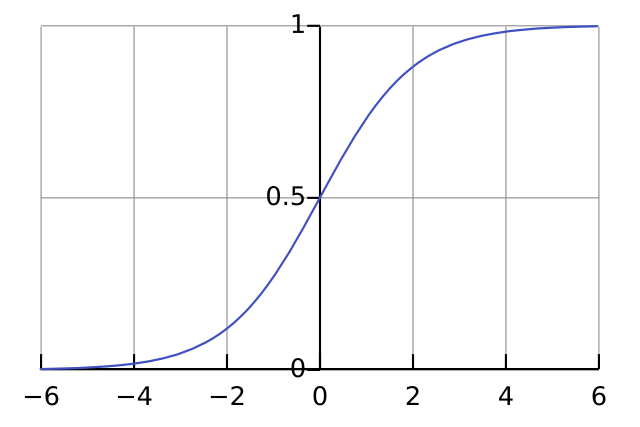

Calculating flakiness one commitment at a time.
Assigning a trustworthiness score (TWS) to an individual is valuable because it provides an expected value for a commitment. The range is from 0 (pathological liar, doubt everything they say unless there is substantial, incontrovertible evidence otherwise) to 1 (perfectly trustworthy, never doubt anything they say and assume what they say is completely true without evidence). A few examples:
There are a few obvious problems with taking this mindset towards others, but counterarguments exist.
First, it can remove valuable expectations and standards from one's behavior. Alyosha should be held accountable for showing up at the agreed-upon 10:00am and I shouldn't have to accommodate for him. If I tell him his consistent tardiness is bothersome and he cares about me, then he should start showing up early or on time. And if he doesn't change his ways? While I'm a proponent of friends abiding by the practice of if-it's-important-to-you-it's-important-to-me, sometimes it just doesn't work that way and it's not worth nixing the friendship, but rather accommodating them and their foibles.
Second, cultural norms dictate different expectations. My culture is one of punctuality and upholding commitments when they're made. Others may value time much less and think saying "I'll do this" is a statement of weak conviction. But what matters is the culture that the relationship is operating in. There is some give-and-take, but some take precedence over others. Company A must abide by company B's culture when trying to win over their business. Person A must abide by person B's culture when person B is leading the effort.
Third, communication of expectations must be open and straightforward before updating one's TWS. The score recipient may not be aware of the expectation they're being held to.
I need a formula that satisfies the following conditions:
A sigmoid function with coefficient and offset options comes naturally:
\[TWS(x) = \frac{1}{1 + ae^{b-ax}}\]where \(x\) is a running counter of true resolutions (x += 1) and false resolutions (x -= 1), \(a\) adjusts the y-axis scaling near low values of \(x\), preventing or allowing one's trustworthiness to be tarnished or overblown by a few flukes, and \(b\) offsets the scale left and right to make it more difficult to achieve high or low trustworthiness, depending on whether it's positive or negative. This score can then be turned into the likelihood of completing an individual commitment, eventually regressing or progressing to the individual's mean trustworthiness.
(A Gompertz function can also be used, but the standard sigmoid with an offset feels cleaner.)
A few considerations on the function:
\(x\) contributions can be weighted based on confidence levels (high confidence corresponds to \(x > 1\) for a single event; low confidence is \(x < 1\)), increasing TWS when high-confidence commitments come true and vice versa.
This concept allows us to Brier-score-ize the function by greatly rewarding high-confidence true resolutions and penalizing high-confidence false resolutions. The Brier score (BS) is used to score probabilistic predictions, where \(BS = (p_{i} - o_{i})^2\) with \(p_{i}\) being the probability and \(o_{i}\) the outcome (1 is true and 0 is false). The squaring helps to penalize larger errors more than smaller errors, a characteristic that is also desired in trusting relationships.
But there are different rewards and penalties depending on the confidence levels and outcomes:
How to mathematize this is left as an exercise for the reader (read: I'm not sure how to do it).
\(b\) values should be zero when there is no information. (This is obviously a contentious take that goes against the conventional wisdom of "trust until proven otherwise", but in my ancedotal experience it roughly holds.) They should also be often be zero because a person's true and false resolutions cancel each other out, with exceptions being made for major true resolutions and minor false resolutions (see note on weighting \(x\) values above).
\(b\) values can be offset in either direction when relevant information is known (reputation, etc).
Keep a running mental tally of how consistent people are with their commitments to get a better idea of their likelihood of fulfilling future commitments.
Let important commitments or those they say they will get done count for much more than unimportant commitments or those they say may not get done.
Trustworthy people should have a more difficult time losing trust than gaining it. The inverse—untrustworthy people should have an easier time losing trust—is also true.
Do what you say you're going to do.